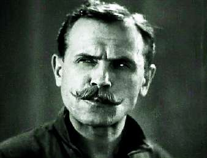

Борис Акунин
Мой календарь
Сегодня день рождения Василия Ивановича Чапаева (1887–1919), который для меня не героический кавалерист с усами, а доказательство великой силы культуры.
Это был один из множества средних военачальников Гражданской войны - не особенно талантливый, судя по катастрофическому фиаско, которое он в конце концов потерпел. Его, конечно, давным-давно забыли бы - если бы не талантливый фильм «Чапаев» и не блестящий актер Бабочкин.
Для нынешней молодежи Чапаев, конечно, не бог весть какой Бэтмен. Если его и вспоминают, то чаще как героя романа «Чапаев и пустота». Но во времена моего детства и юности Васильиваныча знала вся страна, и пелевинская книга - лишь следствие этой большой славы.
Она, правда, была специфическая - не такая, на которую рассчитывали создатели героического эпоса. Чапаев был шашечной игрой и, в первую очередь, героем анекдотов. Однако анекдоты - очень важный компонент культуры, уж поважнее фильма или романа. Потому что анекдоты живут собственной жизнью и возникают сами по себе, фольклорно.
Один, бородатый, я включил в сборник «Интеллектуальные анекдоты»:
Сидят в избе Василий Иванович и Петька. Выпивают, поют "Черного ворона".
Петька говорит:
- Василь Иваныч, ты только не обижайся, шашкой сразу не руби. А что это хлопцы шепчутся будто ты еврей? Неужто правда?
Чапаев:
- Видите ли, Петр…
Однако Чапаев жив и поныне. Вот совсем свежее:
- Василий Иваныч, а что случилось с половцами и печенегами?
- Они режим самоизоляции не соблюдали, Петька…
- От ковида?
- От нас, Петька. От нас…
В общем, vita brevis, ars longa. Первое расстраивает, второе радует.